CUB-200-2011 Leaderboard
Update this leaderboard
| Method | Venue | Year | Improvability | Specificity | TEMI | Code | Visualization |
|---|---|---|---|---|---|---|---|
| DFL [1] | CVPR | 2018 | 59.53 | 38.63 | 46.83 | [Pytorch] |
[Visualization]
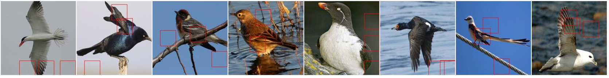
|
| NTS [2] | ECCV | 2018 | 67.16 | 28.11 | 39.63 | [Pytorch] |
[Visualization]
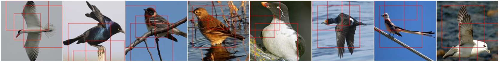
|
| PC [3] | ECCV | 2018 | 68.80 | 29.63 | 41.40 | [Pytorch] |
[Visualization]
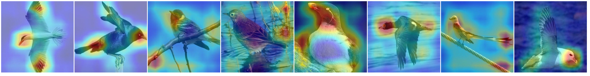
|
| DCL [4] | CVPR | 2019 | 64.77 | 36.14 | 46.39 | [Pytorch] |
[Visualization]
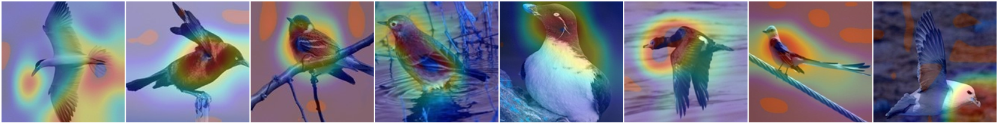
|
| CrossX [5] | ICCV | 2019 | 61.14 | 28.04 | 38.44 | [Pytorch] |
[Visualization]
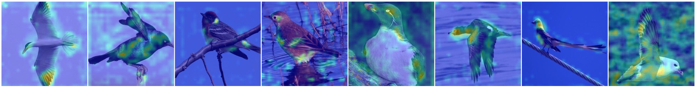
|
| CAL [6] | ICCV | 2021 | 67.11 | 29.77 | 41.24 | [Pytorch] |
[Visualization]
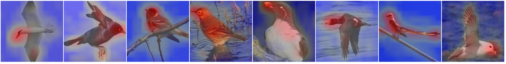
|
| PMG [7] | TPAMI | 2021 | 67.85 | 29.28 | 40.90 | [Pytorch] |
[Visualization]
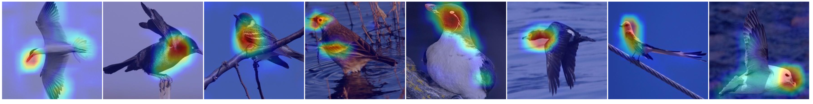
|
| DeiT-B [8] | ICML | 2021 | 59.40 | 37.74 | 46.16 | [Pytorch] |
[Visualization]
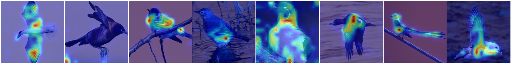
|
| Lime [9] | SIGKDD | 2016 | 65.81 | 33.05 | 44.00 | [Pytorch] |
[Visualization]
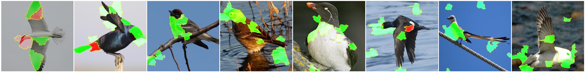
|
| IEBB [10] | ICCV | 2017 | 65.77 | 36.28 | 46.76 | [Pytorch] |
[Visualization]
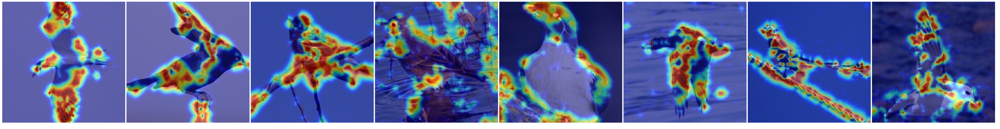
|
| IntegratedGrad [11] | ICML | 2017 | 51.38 | 37.62 | 43.44 | [Pytorch] |
[Visualization]
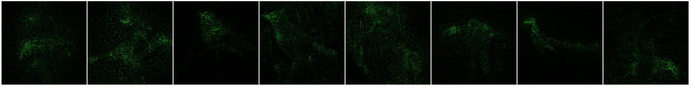
|
| SmoothGrad [12] | arXiv | 2017 | 47.44 | 39.77 | 43.27 | [Pytorch] |
[Visualization]
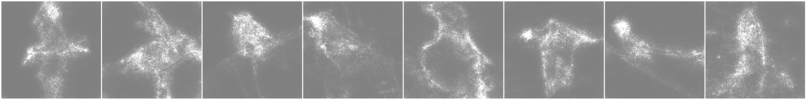
|
| IBA [13] | ICLR | 2019 | 60.79 | 31.13 | 41.17 | [Pytorch] |
[Visualization]
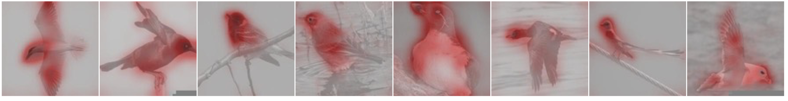
|
| CVE [14] | ICML | 2019 | 65.29 | 38.09 | 48.12 | [Pytorch] |
[Visualization]
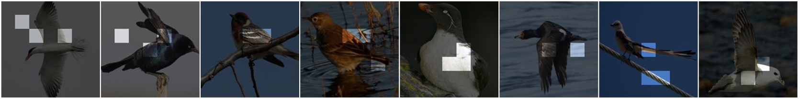
|
| INTER [15] | CVPR | 2020 | 60.79 | 40.04 | 48.30 | [Pytorch] |
[Visualization]
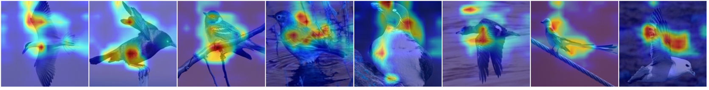
|
| PathwayGrad [16] | CVPR | 2021 | 57.45 | 30.25 | 39.64 | [Pytorch] |
[Visualization]
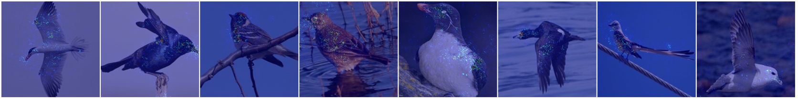
|
| Ours [17] | arXiv | 2021 | 70.52 | 71.54 | 71.03 | [Pytorch] |
[Visualization]
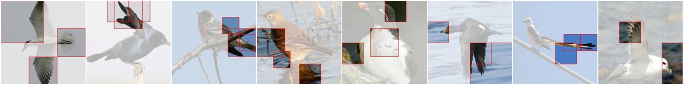
|
Reference
[1] Wang, Yaming, et al. Davis. "Learning a discriminative filter bank within a cnn for fine-grained recognition." In CVPR. 2018.
[2] Yang, Ze, et al. "Learning to navigate for fine-grained classification." In ECCV. 2018.
[3] Dubey, Abhimanyu, et al. "Pairwise confusion for fine-grained visual classification." In ECCV. 2018.
[4] Chen, Yue, et al. "Destruction and construction learning for fine-grained image recognition." In CVPR. 2019.
[5] Luo, Wei, et al. "Cross-x learning for fine-grained visual categorization." In CVPR. 2019.
[6] Rao, Yongming, et al. "Counterfactual attention learning for fine-grained visual categorization and re-identification." In CVPR. 2021.
[7] Du, Ruoyi, et al. "Progressive learning of category-consistent multi-granularity features for fine-grained visual classification." IEEE Transactions on Pattern Analysis and Machine Intelligence (2021).
[8] Touvron, Hugo, et al. "Training data-efficient image transformers & distillation through attention." In ICML. 2021.
[9] Ribeiro, Marco Tulio, Sameer Singh, and Carlos Guestrin. "" Why should i trust you?" Explaining the predictions of any classifier." In SIGKDD. 2016.
[10] Fong, Ruth C., and Andrea Vedaldi. "Interpretable explanations of black boxes by meaningful perturbation." In ICCV. 2017.
[11] Sundararajan, Mukund, Ankur Taly, and Qiqi Yan. "Axiomatic attribution for deep networks." In ICML. 2017.
[12] Smilkov, Daniel, et al. "Smoothgrad: removing noise by adding noise." arXiv preprint arXiv:1706.03825 (2017).
[13] Schulz, Karl, et al. "Restricting the Flow: Information Bottlenecks for Attribution." In ICLR. 2019.
[14] Goyal, Yash, et al. "Counterfactual visual explanations." In ICML. 2019.
[15] Huang, Zixuan, and Yin Li. "Interpretable and accurate fine-grained recognition via region grouping." In CVPR. 2020.
[16] Khakzar, Ashkan, et al. "Neural response interpretation through the lens of critical pathways." In CVPR. 2021.
[17] Chang, Dongliang, et al. "Making a Bird AI Expert Work for You and Me." arXiv preprint arXiv:2112.02747 (2021).
Contact
changdongliang@bupt.edu.cn